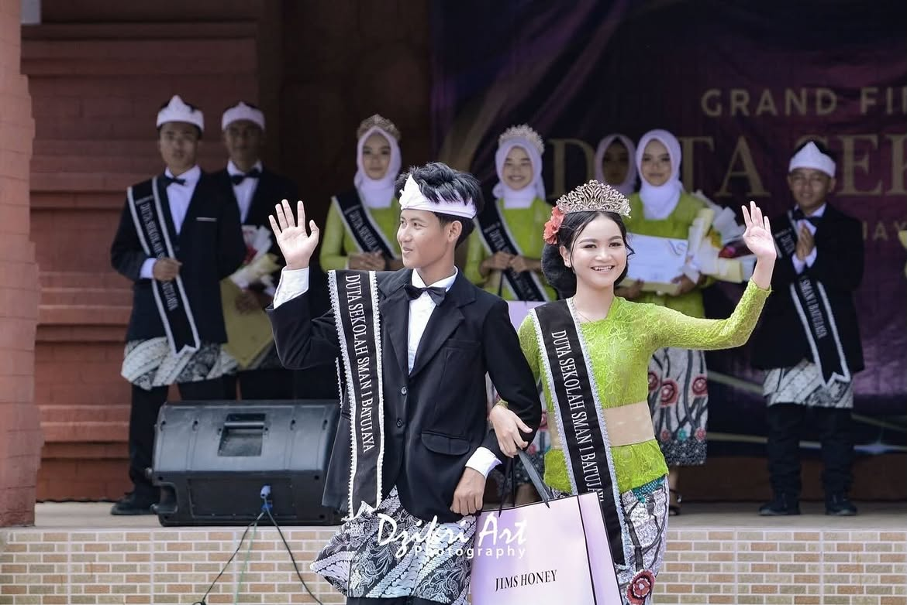
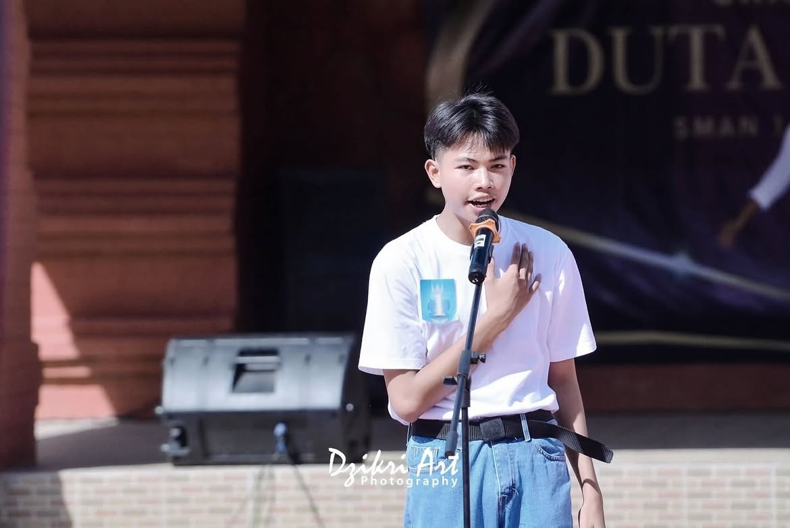
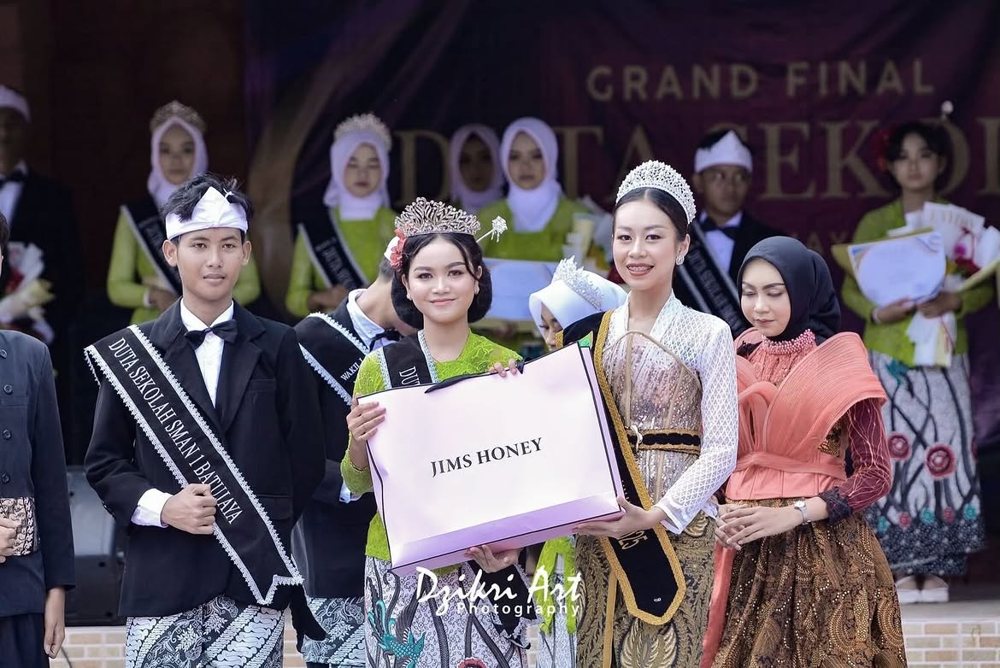
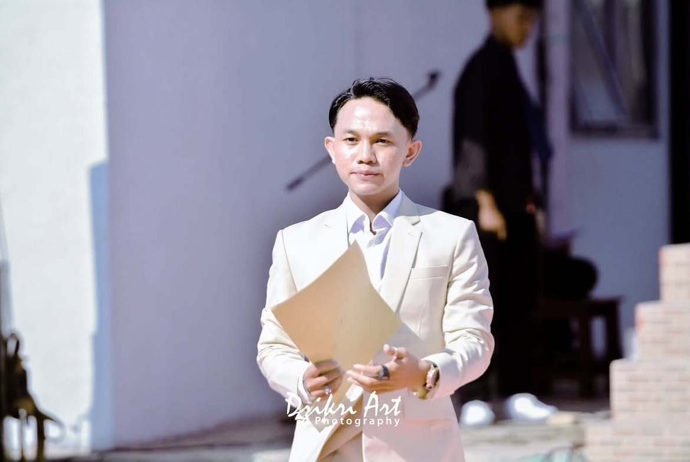
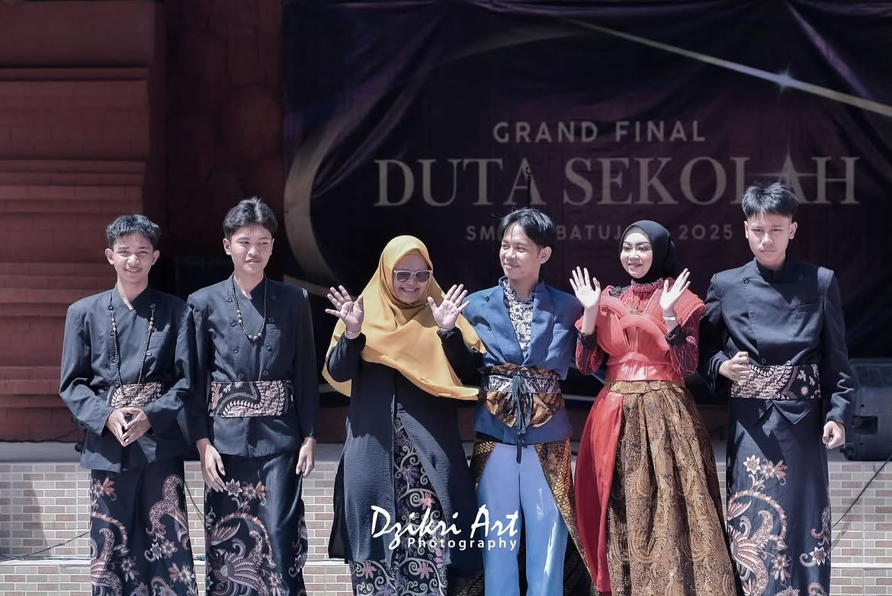

Berintegritas
Menunjukkan sikap yang bertanggung jawab, santun, dan dapat dipercaya.
Bukan sekadar gelar. Ini kesempatan untuk tumbuh, berani mengambil peran, dan menghadirkan perubahan nyata bagi sekolah. Saatnya gagasanmu punya aksi.
Duta Sekolah SMAN 1 Batujaya merupakan ajang pemilihan generasi muda unggulan yang diharapkan ikut berperan aktif dalam perkembangan sekolah, melestarikan budaya sekolah, serta menjadi motivasi bagi siswa dan siswi lainnya.
"Generasi muda yang modern dan berdaya saing, tanpa kehilangan jati diri dan akar budayanya."
Semangat Duta Sekolah SMAN 1 BatujayaMenunjukkan sikap yang bertanggung jawab, santun, dan dapat dipercaya.
Mengubah kepedulian dan gagasan menjadi langkah nyata yang bisa dilakukan.
Mendengarkan aspirasi dan bekerja sama dengan warga sekolah.
Mengupayakan kontribusi yang bermanfaat dan berkelanjutan.
Pemilihan Duta Sekolah tahun ini mengusung konsep "Inisiator & Pelopor Pembangunan". Ajang ini bukan sekadar wadah apresiasi bakat dan penampilan, melainkan ruang seleksi bagi pelajar terpilih yang siap membawa perubahan positif secara berkelanjutan.
Mewujudkan SMAN 1 Batujaya yang Berdaya dan Berbudaya. Setiap finalis wajib mengusung satu program kerja nyata atau impact project yang berfokus pada perbaikan kehidupan sekolah.
Setiap finalis wajib mengusung satu program kerja nyata atau impact project yang berfokus pada perbaikan kehidupan sekolah. Ini bukan sekadar tugas—ini kesempatanmu meninggalkan jejak yang bermanfaat.
Amati lingkungan sekolah. Cari persoalan yang benar-benar dirasakan warga sekolah—kebersihan, budaya baca, kesadaran lingkungan, atau hal lain.
Susun gagasan program yang jelas: tujuan, sasaran, kegiatan, kebutuhan, dan waktu pelaksanaan. Semakin rinci, semakin siap dijalankan.
Setelah dinilai dan disetujui, jalankan program dengan disiplin. Libatkan teman, guru, dan pihak terkait agar dampaknya lebih luas.
Dokumentasikan setiap proses, hasil, dan pembelajaran. Evaluasi apa yang berhasil dan apa yang bisa ditingkatkan.
Gerakan Literasi Sekolah · Bank Sampah · Kampanye Anti-Bullying · Taman Baca · Pojok Kreatif · Program Hemat Energi · Kampanye Sekolah Sehat · Dan masih banyak lagi, sesuai kebutuhan dan kreativitasmu.
Menjadi duta bukan cuma tentang tampil di depan umum. Peran ini juga tentang keteladanan, komunikasi, kerja sama, dan kemauan untuk ikut menyelesaikan persoalan di sekitar.
Menjaga sikap, etika, kedisiplinan, dan tanggung jawab serta menunjukkan perilaku positif kepada teman sebaya.
Membantu menyampaikan hal-hal positif tentang SMAN 1 Batujaya melalui komunikasi dan kegiatan yang sesuai.
Mengembangkan dan menjalankan program kerja atau impact project yang menjawab kebutuhan lingkungan sekolah.
Ikut merawat kebiasaan baik, rasa bangga terhadap sekolah, dan budaya yang membangun kebersamaan.
Mengajak siswa berpartisipasi dalam kegiatan positif, mendengarkan ide, dan membangun kerja sama.
Mengatur waktu, berkoordinasi dengan pihak terkait, serta mengevaluasi kegiatan agar kontribusi tidak berhenti sebagai wacana.
Catatan: rincian tugas di atas merupakan gambaran umum peran duta dan pengembangan dari konsep program dalam dokumen. Tugas resmi serta agenda setelah pemilihan mengikuti arahan panitia dan sekolah.
Pengalaman menjadi duta dapat menjadi ruang belajar yang nyata—bukan hanya untuk hari ini, tetapi juga untuk perjalananmu setelah lulus.
Melatih keberanian menyampaikan ide, berbicara di depan umum, dan menghadapi tantangan baru.
Belajar mengambil inisiatif, membuat keputusan, membagi peran, dan bertanggung jawab terhadap program.
Mengasah kemampuan mendengar, menyampaikan pesan, bekerja dalam tim, dan bertemu orang dengan perspektif berbeda.
Mendokumentasikan proses, kontribusi, karya, dan pembelajaran yang dapat mendukung pengembangan diri di masa depan.
Belajar mengenali kebutuhan sekolah dan merancang aksi yang bermanfaat, bukan sekadar mengutarakan ide.
Menemukan kekuatan, melatih keterampilan baru, menerima masukan, dan belajar memperbaiki diri.
Proses Pemilihan Duta Sekolah berlangsung selama kurang lebih tiga bulan, dari rekrutmen hingga Grand Final. Setiap tahapan dirancang untuk mengasah potensi, karakter, dan kesiapan peserta.
Pertemuan awal panitia dengan calon peserta untuk memaparkan aturan, alur seleksi, jadwal, serta hal-hal teknis yang harus dipersiapkan.
Proses seleksi awal untuk menilai potensi, kepercayaan diri, kemampuan komunikasi, dan kesiapan peserta mengikuti tahapan selanjutnya.
Pembekalan intensif untuk mengembangkan potensi, karakter, wawasan, dan kesiapan peserta menjalankan peran sebagai Duta Sekolah.
Panggung bagi peserta untuk menampilkan bakat terbaik, kreativitas, dan penampilan di hadapan dewan juri serta hadirin.
Setiap finalis mengusung dan menjalankan program kerja nyata (impact project) yang memberi manfaat bagi lingkungan sekolah.
Malam puncak Pemilihan Duta Sekolah SMAN 1 Batujaya 2026/2027, hasil dari seluruh rangkaian proses selama tiga bulan.
Dokumen mencantumkan sasaran sebanyak 15 putera dan 15 puteri dari kelas X dan XI.
Momen-momen terbaik dari perjalanan Pemilihan Duta Sekolah. Klik salah satu kartu untuk melihat seluruh foto di dalamnya.

Detik ketika mahkota Duta Sekolah disematkan, momen paling bersejarah bagi setiap finalis.
Lihat detail
Penampilan pembuka yang memukau, menghadirkan energi dan semangat sebelum rangkaian acara dimulai.
Lihat detail
Senyum kemenangan yang sekaligus menjadi janji mengemban amanah.
Lihat detail
Penilaian teliti dan penuh tanggung jawab dari para juri berpengalaman.
Lihat detail
Prosesi pelepasan tugas Duta Sekolah 2024, momen haru penuh makna dan penghormatan.
Lihat detail
Tarian pembuka yang energik dari para finalis, membuka malam puncak dengan semangat.
Lihat detail
Sesi tanya jawab menegangkan bagi tiga besar, menguji wawasan dan ketenangan berpikir.
Lihat detail
Pidato penuh keyakinan dari lima besar, menyampaikan visi dan komitmen mereka.
Lihat detail
Keindahan seni tari tradisional yang membuka acara dengan khidmat dan memukau.
Lihat detail
Penampilan energik dari ekstrakurikuler Jaipong, menghidupkan budaya Sunda di panggung.
Lihat detail
Penampilan memukau dari Japanese Club, menghadirkan nuansa budaya Jepang di panggung.
Lihat detail
Penampilan tari modern yang enerjik, menambah semarak malam puncak Grand Final.
Lihat detail
Mojang Pinilih Kabupaten Karawang 2025, alumni Duta Sekolah SMAN 1 Batujaya yang kembali bersinar.
Lihat detail
Pemandu acara yang membawa seluruh rangkaian Grand Final dengan lancar dan penuh karisma.
Lihat detailBeberapa pertanyaan yang paling sering ditanyakan calon peserta. Kalau masih ada yang belum terjawab, hubungi panitia langsung.
Peserta adalah siswa kelas X dan XI SMAN 1 Batujaya yang berminat, memiliki kemauan belajar, dan siap mengikuti seluruh rangkaian kegiatan. Persyaratan administratif rinci akan diinformasikan oleh panitia melalui Instagram resmi dan grup koordinasi.
Pendaftaran dibuka mulai 1 Oktober 2026 dan ditutup pada 31 Oktober 2026. Jangan tunggu sampai hari terakhir, ya!
Isi formulir pendaftaran melalui link Google Form yang tersedia di bio Instagram @dutasekolahsmansaba. Setelah itu, kamu akan dimasukkan ke grup koordinasi untuk mendapatkan informasi selanjutnya.
Informasi mengenai biaya akan diinfokan langsung oleh panitia. Silakan hubungi kontak panitia untuk detail lebih lanjut.
Grand Final dijadwalkan pada minggu kedua bulan Desember 2026. Tanggal pasti akan dikonfirmasi oleh panitia mendekati pelaksanaan.
Impact project adalah program kerja nyata yang wajib diusung setiap finalis. Program ini harus memberi manfaat bagi lingkungan sekolah dan dijalankan sebagai bagian dari proses seleksi.
Masih ada pertanyaan lain? Hubungi panitia langsung.
Jangan ragu untuk menghubungi panitia jika ada hal yang perlu ditanyakan seputar pendaftaran, persyaratan, atau rangkaian kegiatan.
+62 857-7969-2717
CHAT VIA WHATSAPP ↗+62 858-1760-3427
CHAT VIA WHATSAPP ↗Dapatkan informasi terbaru seputar pendaftaran, jadwal, dan rangkaian kegiatan Pemilihan Duta Sekolah SMAN 1 Batujaya 2026/2027.
Hitung mundur menuju malam puncak Pemilihan Duta Sekolah SMAN 1 Batujaya 2026/2027. Estimasi: minggu kedua Desember 2026.
Jangan lewatkan kesempatan ini. Isi formulir pendaftaran sebelum tanggal penutupan.
Prosesnya berlangsung selama tiga bulan, dengan Grand Final pada bulan Desember. Kamu tidak harus menjadi orang yang paling sempurna untuk mulai berkontribusi. Bawa rasa ingin belajar, keberanian untuk mencoba, dan satu gagasan yang ingin kamu wujudkan.
Jadilah bagian dari generasi muda SMAN 1 Batujaya yang berkarakter, berdaya saing, dan berdampak nyata. Kenali ketentuan pendaftaran dari panitia, lalu ambil langkah pertamamu.
ISI FORMULIR PENDAFTARAN ↗PEMILIHAN DUTA SEKOLAH SMAN 1 BATUJAYA · TAHUN 2026/2027
Karsa Lokal, Dampak Nasional — Mewujudkan SMAN 1 Batujaya yang Berdaya dan Berbudaya.